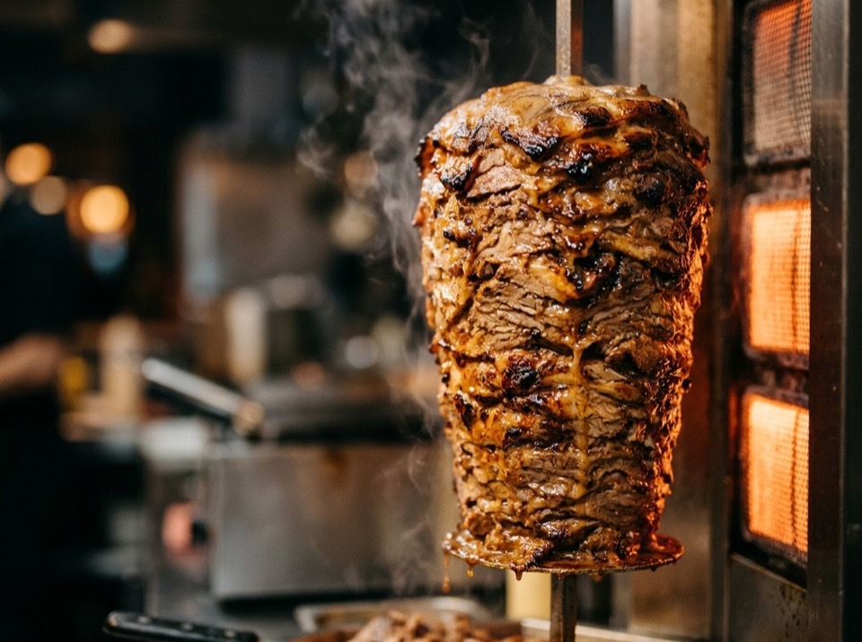

Kreuzberg 36 · U Kottbusser Tor
DER DÖNER, DER DIE SONNE BRINGT.
Täglich von Hand geschichtet. Kein billiges Hackfleisch. 24 Stunden gereifte Kräutermarinade und im Steinofen frisch gebackenes Sesam-Fladenbrot. Erlebe jede Schicht beim Scrollen.
Steinofen-Fladenbrot
Frisch gebacken mit goldbrauner Kruste, Sesam und Schwarzkümmel.
Individuelles Kiez-Handwerk
BAU DIR DEINEN DÖNER
Wähle dein ofenfrisches Brot, saftiges Fleisch oder vegane Basis, hausgemachte Saucen und feine Extras. Der Preis und die Vorschau aktualisieren sich in Echtzeit.
1. Brot-Variante
Einfachauswahl
2. Fleisch & Proteine
Einfachauswahl
3. Hausgemachte Saucen
Bis zu 3 wählen
4. Extras & Toppings
Mehrfachauswahl
DEINE KREATION
9,50 €
Döner im Steinofenbrot
Brot:
Klassisches Sesam-Fladenbrot
Fleisch/Basis:
100% Kalb-Schichtfleisch (Yaprak)
Saucen:
Knoblauch-Kräuter, Harissa-Chili
Extras:
Echter Hirtenkäse
Vor deinen Augen frisch zubereitet · Abholung oder Express-Lieferung



450°C KERAMIK-GRILL
Kross karamellisierte Tranchen
Kein Hack · Reine Qualität
DAS GEHEIMNIS DES SPIESSES
Jeden Morgen um Punkt 6:00 Uhr wird unser Spieß in unserer Kreuzberger Backstube von Hand gesteckt. Wir verzichten radikal auf vorgefertigtes Industriehackfleisch und chemische Bindemittel.
Wir verwenden ausschließlich 100% zarte Kalbs- und Rindfleischscheiben, die 24 Stunden lang in unserer Hausmarinade aus kühlem Bergjoghurt, geröstetem Kreuzkümmel, sonnengetrocknetem Aleppo-Chili und kaltgepresstem Olivenöl ruhen. Wenn der Spieß am vertikalen Grill rotiert, karamellisieren die Ränder im Sekundentakt. Jede Tranche wird hauchdünn mit unserem geschliffenen Messer von Hand geschnitten.
0
%
Schichtfleisch
Ausschließlich reine Scheiben, garantiert 0% Hackfleischanteil.
0
h
Marinierzeit
Volle 24 Stunden Reife in Gewürzjoghurt und kaltgepresstem Öl.
0
%
Zusatzstoffe
Keine Geschmacksverstärker, keine Phosphate, pure Natur.
0
°C
Grill-Hitze
Intensive Hitze für sekundenschnelle goldene Röstaromen.
Kreuzberg schläft nie
ÖFFNUNGSZEITEN & NACHT-SERVICE
Ob Mittagspause, Feierabend am Kanal oder Hunger nach dem Club: Unsere Messer schneiden durchgehend bis in die frühen Morgenstunden.
JETZT GEÖFFNET
Der Spieß dreht sich! Heute durchgehend geöffnet bis 03:00 Uhr morgens.
Aktuelle Kiez-Zeit: 04:21 Uhr (Berlin)
Montag
11:00 – 03:00 Uhr
Dienstag
11:00 – 03:00 Uhr
Mittwoch
11:00 – 03:00 Uhr
Donnerstag
11:00 – 03:00 Uhr
Freitag Nachtschicht
11:00 – 06:00 Uhr
Samstag Nachtschicht
11:00 – 06:00 Uhr
Sonntag
12:00 – 03:00 Uhr
Heiß & Schnell zu dir
UNSER LIEFERGEBIET IN BERLIN
Tippe oder fahre mit der Maus über deinen Bezirk, um Lieferzeiten, Mindestbestellwert und Konditionen einzusehen.
Ausgewählter Lieferbezirk
Kreuzberg 36 & 61
PLZ: 10999, 10967, 10961
Lieferzeit
15–25 Min
Mindestbestellung
12,00 €
Liefergebühr
Kostenlos ab 20 € (sonst 1,00 €)
Heiße Thermoboxen · Auslieferung mit E-Bike & Roller
Echtes Kiez-Urteil
STIMMEN AUS KREUZBERG
Vom alteingesessenen Nachbarn bis zur Club-Nachteule: So schmeckt der Döner der Sonne am Kotti.
"Wer am Kottbusser Tor Döner isst, kennt den Unterschied zwischen Industrieware und echtem Handwerk. Bei Döner der Sonne schmeckt man das 100% Schichtfleisch und die gerösteten Gewürze ab dem ersten Bissen. Die Knoblauchsauce sucht in ganz Berlin ihresgleichen."
"Endlich ein Dönerladen, der den Spieß als echtes Kulinarik-Handwerk begreift. Das Brot wird vor deinen Augen im Ofen gebacken, die Kombination aus krossen Fleischtranchen, Granatapfelkernen und Sumach-Zwiebeln ist pure Perfektion. Auch nachts um 4 Uhr mit vollem Einsatz."
"Nach der Schicht am Maybachufer gibt es für uns nur einen einzigen Halt: Der große Sonne-Dürüm mit extra Jalapeños und eiskaltem Ayran. Frische Zutaten, perfekt gewürzt, saftig bis zum letzten Zentimeter. Eine feste Berliner Institution."
Direkt am Kotti oder geliefert
KONTAKT & SCHNELLE BESTELLUNG
Ruf uns direkt an, schreib uns auf Telegram oder bestelle dein Essen vor – frisch, heiß und ohne lange Wartezeit.
Telefonische Hotline
+49 888 6661234
Telegram Express-Chat
@rovatt
E-Mail für Anfragen
12234456789@gmail.com
Standort am Kottbusser Tor
Adalbertstraße 9, 10999 Berlin
BESTELLUNG ERHALTEN!
Bestell-ID: #DS-8392
Vielen Dank! Dein Döner wird jetzt frisch zubereitet und in Kürze ausgeliefert.